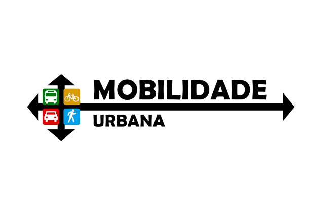

Mobilidade refere-se a essa possibilidade de mover-se, sob as mais diversas formas pela cidade, associando este entendimento aos veículos, as vias e a toda a infraestrutura necessária, para o deslocamento de pessoas e cargas. É a qualidade daquilo que se move, do que se consegue movimentar. Refere-se à locomoção, capacidade de se mudar, de ir a outro lugar com rapidez.
Para tal objetivo, os centros urbanos se valem de diversos meios de transporte como: carro, ônibus, metrô, brt (Transporte Rápido por ônibus), bicicleta, à pé, avião, navio, ferry-boat, trem, barcos, entre outras possibilidades que possam existir.
Imaginar o deslocamento, o trânsito no âmbito da cidade é algo primordial, para o desenvolvimento das funções sociais e ambientais.
É preciso, portanto, trabalhar questões como: meios de transporte, engarrafamentos, vias públicas, estações, ciclovias, faixas de pedestre, pavimentação, fluxo, tarifação, emissão de poluentes, poluição sonora; enfim, uma série de aspectos que estão correlacionados com a mobilidade.
Contudo, existe uma série de variáveis que impactam e são impactadas pela mobilidade urbana, seja de forma direta, como os sistemas de transporte e o uso e ocupação do solo; ou indireta, como variáveis ambientais, econômicas, ligadas à saúde, sociais, dentre outras.
orna-se importante observar a integração entre os diferentes modos de transporte e a melhoria da acessibilidade e mobilidade das pessoas e cargas no território do Município, tornando-se imprescindível considerar que qualquer mudança na estrutura social da cidade impactará diretamente sobre o deslocamento.
1. Rápido desenvolvimento urbano
Segundo o Ipea, o rápido crescimento populacional aparece como um dos principais desafios para a mobilidade.
Hoje, aproximadamente 85% da população brasileira vive em centros urbanos.
Cerca de 36 cidades têm mais de 500 mil moradores e os municípios de regiões metropolitanas acumulam aproximadamente 80 milhões de habitantes.
2. Investimentos na infraestrutura
O estudo aponta o alto custo de projetos de infraestrutura como mais um desses cenários desafiadores, uma vez que é necessário que existam vias e sistemas de transporte adequados para deslocar o cidadão.
3. Aumento do uso de transporte individual
Nesse aspecto, o anseio do cidadão por conforto, segurança e independência levam ao aumento do número de carros nas ruas.
Isso, por sua vez, gera constantes congestionamentos em horários de pico.
Além disso, o comportamento humano no trânsito causa impactos significativos nos índices de acidentes.
Por se tratar do direito de ir e vir das pessoas, a mobilidade urbana está diretamente ligada ao processo de urbanização das cidades. Esse processo teve sua acentuação com a chegada das grandes indústrias no Brasil, em meados da década de 1930.
Tais indústrias se concentraram em poucas áreas, principalmente na Região Sudeste. A industrialização acelerou a migração campo-cidade, conhecida como êxodo rural, em que as pessoas partiam das áreas rurais em busca de empregos e possíveis melhorias de vida.
Essa migração acelerada, entretanto, não acompanhou a geração de empregos, o que trouxe grande competitividade em várias áreas: moradia, trabalho, alimentação, lazer e, principalmente, o uso dos espaços públicos. Com isso, a mobilidade urbana, ao longo dos anos, ganhou evidência, gerando graves problemas urbanos.
Vários geógrafos e urbanistas que se dedicam ao estudo da mobilidade urbana procuram soluções para melhorar o trânsito nas cidades e, consequentemente, a mobilidade urbana nos espaços públicos. Dentre algumas soluções, podemos citar:
- ampliar áreas atendidas pelos transportes públicos coletivos (ônibus, metrô e trem);
- diversificar o uso dos meios de transportes (carros, bicicletas, ônibus, motocicletas);
- incentivo a caronas coletivas para pessoas que vão para a mesma direção;
- integração entre os transportes públicos (ônibus integrado com metrô, por exemplo).
Essas soluções poderiam amenizar os problemas de mobilidade desde que houvesse uma parceria entre a sociedade e poder público, com campanhas de conscientização ambiental e de uso consciente dos espaços públicos. Afinal, a cidade é de todos, e todos têm o direito e dever de cuidar dela.
A Avenida Paulista, localizada em São Paulo, Brasil, oferece uma variedade de opções de transporte público sustentável para os moradores e visitantes:
-Metrô: A Avenida Paulista é atendida pelas estações de metrô Trianon-Masp (linha 2-Verde) e Brigadeiro (linha 2-Verde). O metrô é uma opção eficiente e sustentável de transporte, ajudando a reduzir o tráfego de veículos.
-Ônibus: É servida por várias linhas de ônibus que conectam diferentes partes da cidade. Os ônibus estão se tornando cada vez mais sustentáveis, com a introdução de veículos elétricos e movidos a biocombustíveis.
-Bicicleta: Possui ciclovias e ciclofaixas que permitem o deslocamento de bicicleta com segurança. Há estações de aluguel de bicicletas compartilhadas, como o Bike Sampa, que oferecem opções de transporte sustentável.
-Patinetes elétricos: Algumas empresas de compartilhamento de patinetes elétricos operam na Avenida Paulista. Esses patinetes são movidos a energia elétrica e são uma alternativa prática e sustentável para viagens curtas na região.
Táxi e transporte por aplicativo: Embora não sejam necessariamente opções de transporte público, táxis e serviços de transporte por aplicativo são uma alternativa conveniente e podem ajudar a reduzir o número de carros particulares circulando na avenida.
É importante observar que a disponibilidade desses serviços pode variar ao longo do tempo, portanto, é sempre recomendável verificar as opções de transporte atualizadas antes de planejar sua viagem pela Avenida Paulista.